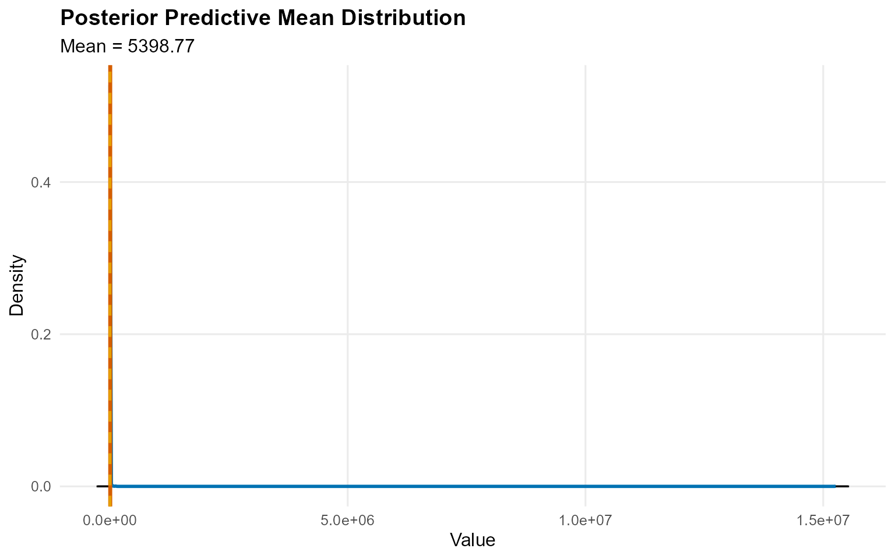

Cookbook vignette (for the website / historical notes). These files may not match the current exported API one-to-one. Last verified: 2026-01-18.
For the up-to-date workflow, see the main package vignettes (Introduction, Model Spec, MCMC Workflow, Unconditional/Conditional/Causal, Backends, S3 Reference).
Theory (brief)
The DP mixture models the bulk density as $f(y)=\\int K(y;\\theta)\\,dG(\\theta)$ with $G \\sim \\mathrm{DP}(\\alpha, G_0)$. This gives a flexible, data-driven mixture representation while keeping inference in a Bayesian framework.
Getting Started
This vignette gives a minimal, fully working workflow for an unconditional model and a conditional model. Everything uses short MCMC runs so the vignette renders quickly.
Unconditional Model (CRP, bulk-only)
data("nc_pos200_k3")
y <- nc_pos200_k3$y
bundle_uncond <- build_nimble_bundle(
y = y,
backend = "crp",
kernel = "gamma",
GPD = FALSE,
components = 5,
mcmc = mcmc
)
fit_uncond <- load_or_fit("v00-start-here-fit_uncond", quiet_mcmc(run_mcmc_bundle_manual(bundle_uncond, show_progress = FALSE)))
summary(fit_uncond)MixGPD summary | backend: Chinese Restaurant Process | kernel: Gamma Distribution | GPD tail: FALSE | epsilon: 0.025
n = 200 | components = 5
Summary
Initial components: 5 | Components after truncation: 1
WAIC: 963.248
lppd: -456.908 | pWAIC: 24.716
Summary table
parameter mean sd q0.025 q0.500 q0.975 ess
weights[1] 0.883 0.138 0.474 0.917 1 8.469
alpha 0.457 0.398 0.022 0.354 1.503 42.38
shape[1] 1.161 0.151 0.915 1.159 1.483 14.106
scale[1] 0.265 0.037 0.204 0.266 0.338 25.996
pred_q <- predict(fit_uncond, type = "quantile", index = c(0.5, 0.9), interval = "credible")
head(pred_q$fit) estimate index lower upper
1 0.228 0.5 0.135 0.342
2 0.687 0.9 0.467 0.915
plot(pred_q)
Conditional Model (SB, bulk-only)
bundle_cond <- build_nimble_bundle(
y = yc,
X = X,
backend = "sb",
kernel = "lognormal",
GPD = FALSE,
components = 5,
mcmc = mcmc
)
fit_cond <- load_or_fit("v00-start-here-fit_cond", quiet_mcmc(run_mcmc_bundle_manual(bundle_cond, show_progress = FALSE)))
summary(fit_cond)MixGPD summary | backend: Stick-Breaking Process | kernel: Lognormal Distribution | GPD tail: FALSE | epsilon: 0.025
n = 100 | components = 5
Summary
Initial components: 5 | Components after truncation: 3
WAIC: 509.609
lppd: -220.586 | pWAIC: 34.218
Summary table
parameter mean sd q0.025 q0.500 q0.975 ess
weights[1] 0.432 0.073 0.297 0.43 0.563 20.008
weights[2] 0.298 0.064 0.177 0.31 0.4 12.128
weights[3] 0.159 0.054 0.06 0.16 0.263 19.977
alpha 1.609 0.883 0.552 1.409 3.673 23.402
beta_meanlog[1, 1] -0.089 0.261 -0.641 -0.13 0.493 24.612
beta_meanlog[2, 1] 0.15 0.271 -0.404 0.153 0.554 14.485
beta_meanlog[3, 1] -0.302 1.288 -3.537 -0.193 1.91 7.21
beta_meanlog[4, 1] 0.149 1.197 -2.431 0.514 1.794 14.772
beta_meanlog[5, 1] 0.5 0.617 -0.809 0.611 1.458 10.102
beta_meanlog[1, 2] 0.698 0.775 -0.752 0.533 2.26 9.533
beta_meanlog[2, 2] -1.014 0.373 -1.782 -1.023 -0.337 12.472
beta_meanlog[3, 2] 0.531 1.862 -2.809 0.718 4.688 17.038
beta_meanlog[4, 2] -0.536 1.666 -3.483 -0.785 2.86 6.288
beta_meanlog[5, 2] 0.878 1.02 -1.31 1.159 2.59 4.981
beta_meanlog[1, 3] 0.12 0.377 -0.73 0.209 0.737 21.374
beta_meanlog[2, 3] -0.139 0.324 -0.683 -0.184 0.444 11.118
beta_meanlog[3, 3] 0.171 0.98 -1.645 0.257 2.249 24.319
beta_meanlog[4, 3] -0.108 1.353 -3.217 -0.042 2.262 13.235
beta_meanlog[5, 3] 0.322 0.458 -0.736 0.316 1.343 12.508
sdlog[1] 1.076 0.44 0.511 1.002 2.048 50.89
sdlog[2] 1.246 0.567 0.459 1.147 2.495 26.925
sdlog[3] 1.757 1.185 0.464 1.432 4.916 106.303
x_new <- X[1:20, , drop = FALSE]
pred_mean <- predict(fit_cond, x = x_new, type = "mean", interval = "credible", nsim_mean = 200)
head(pred_mean$fit) estimate lower upper
1 23.6 1.038 79.6
2 860.6 1.212 292.6
3 418.0 1.012 905.9
4 51.0 0.972 313.9
5 22.6 1.000 160.9
6 173.7 1.105 1067.2
plot(pred_mean)